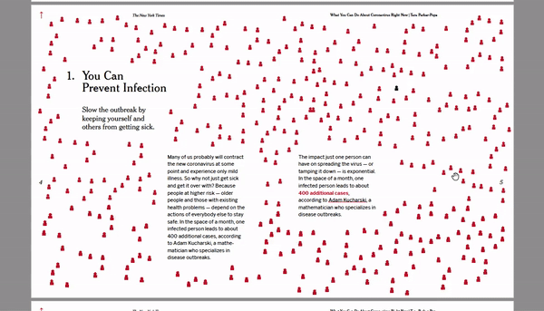

The Coronavirus Outbreak Guide is an interactive PDF book that includes information from public health experts to protect yourself and your community. Added interactive elements are included to make it easier to learn and be responsible about the pandemic. It’s best viewed downloaded and opened with Adobe Acrobat using Flash Player. Original text collected by The New York Times. 8.5"x7", 66 pages

↑ Demonstration of interactive navigation with table of contents 
↑ Autoplay video viewing of hand washing techniques and how to take care of COVID-19 positive roommates
↑ Embedded music players in PDF, proposing lines of songs you can wash your hands to
↑ Various visual bodies of text that depict the topic of distance
↑ Other visual markers about various health related information

↑ Interactive fill-in-the-blank diary embedded in the PDF